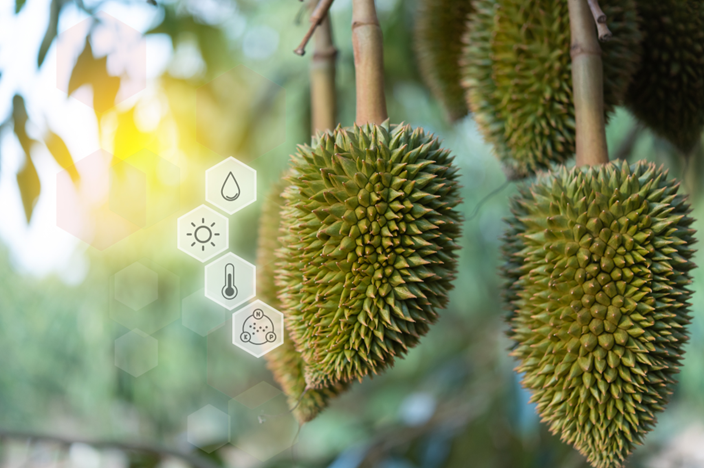
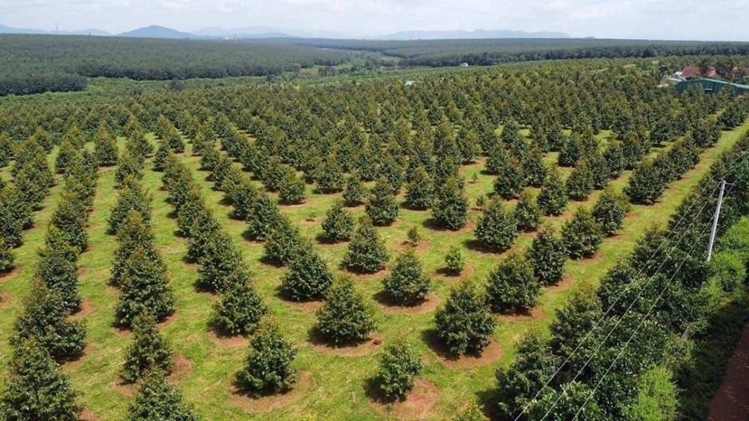

NextFarm – Fertikit 4G
- Automatically applies fertilizer based on the nutrient needs of durian trees
- Remote scheduling and monitoring via mobile applications
- Optimizes nutrition, reduces waste, and saves labor costs
- Improves yield and fruit quality
Smart technology for sustainable agriculture
Welcome to Smart Farming Durian, a platform dedicated to sharing knowledge and guidance on applying modern technology in durian cultivation. We believe that with the support of smart technology, every durian orchard can achieve high productivity, consistent quality, and long-term sustainability.
Whether you are a farmer, student, or agriculture enthusiast, Smart Farming Durian accompanies you on the journey of smart durian cultivation – increasing productivity – achieving sustainable growth. We hope this website will serve as a reliable reference, helping you apply technology easily and effectively in every durian orchard.
Sustainable smart farming for the future

Data-driven decisions for optimal results
Optimized resources and reduced costs
The Foundation for Improving the Quality of Vietnamese Durian
Platforms: iMetos / NextFarm

Open the application

Log in to the system

Select the crop type

Monitor soil, weather, and environmental data in real time

Practical Application: FaceFarm
QR Code Content: